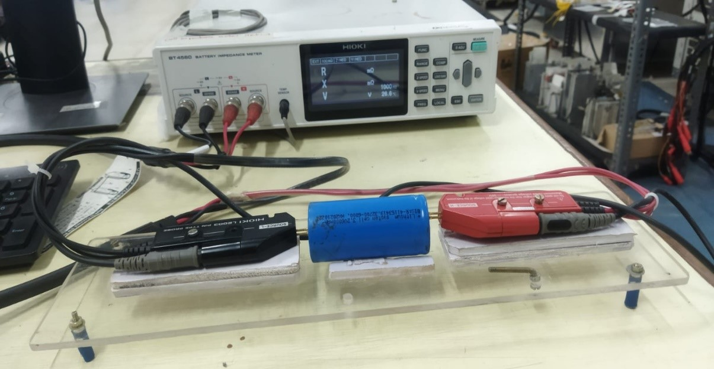

Experiment 01: Measurement of battery cell parameters including internal resistance using a battery tester.
Objective:
To measure the cell parameters such as voltage, Current, Capacity, Temperature, SoC vs OCV Curve, Internal Resistance etc., using the battery pack tester.
Equipments Required:
Cell Tester, Impedance Meter
Methodology:
To initiate impedance measurements, the probe of the impedance meter should be positioned onto the corresponding terminals of the battery cell as shown in the below figure.
Subsequently, impedance measurements can be initiated within the impedance meter software, ensuring that the desired frequency is selected, as mentioned in the below image.

Example measurement reading from the impedance meter software is given below,

Once the IR is measured, we can connect the cell in the cell tester and start charging and discharging as per our requirement in the cell tester software.

Above figure represents the testing procedure of the software that can be adjusted as per our requirements. Below figure represents the output from the cell tester for the test that we conducted.

Using these data of cell parameters such as voltage, current, temperature, we can extract the SoC vs OCV Curve as mentioned below,
SOC for charging= (Current Capacity/Final Capacity) *100
SOC for discharging= 100-(Current Capacity/Final Capacity) *100


Conclusion:
The internal resistance measurement and SoC vs OCV Curve plotting can be done using the above methodology with the corresponding equipments as mentioned.